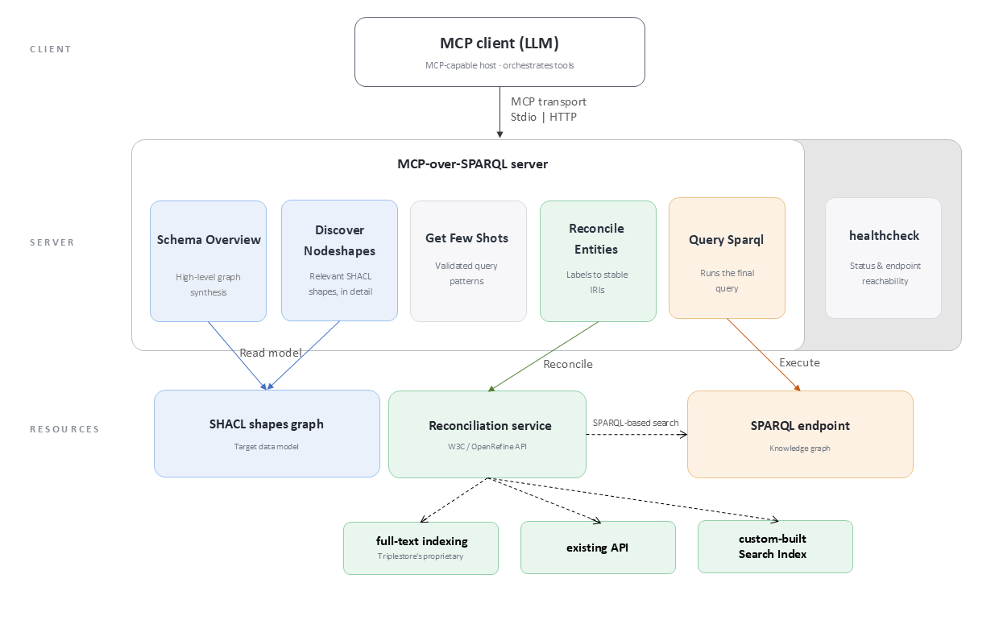
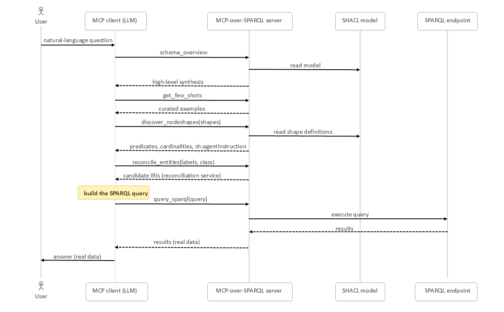

Abstract
MCP-over-SPARQL is a Model Context Protocol server that provides tools enabling a client LLM to successfully write an execute a valid SPARQL query on a knowledge graph. The server connects an MCP-capable LLM client to a SPARQL endpoint together with other tools for retrieving an overview of the graph, curated query examples, and the detailled knowledge graph structure from a SHACL specification. In addition, it exposes a reconciliation function to retrieve entity URIs from a label and a type. This provides all the necessary primitives for an LLM client to turn a natural language question into a SPARQL query, using a correct graph structure and valid URI identifiers. The system reduces schema guessing and returns data from the endpoint. We demonstrate the approach on the the Standardized Drug Nomenclature of France digital health agency, and show how it supports controlled, schema-aware querying of domain-specific knowledge graphs. The objective of this project is to build an hydrid AI tool about drug knowledge.
Introduction
Knowledge graphs are sources of trustworthy structured data, but leveraging this data directly in SPARQL [1] requires understanding the underlying schema, the available predicates, and the URI identifiers used in the graph. Yet, data publishers often wants to maximise the reuse of their knowledge graph, and making such datasets query-able by AI systems is a interesting dissemination channel towards non-technical audience.
Large Language Models (LLM) can query external sources when they are connected to tools through the Model Context Protocol [2]. In this demo, we present MCP-over-SPARQL [3], an MCP server driven by a SHACL [4] specification that describes the underlying knowledge graph structure. The server exposes this structure through a small set of schema-grounded tools that let an MCP-capable client discover the schema, inspect relevant types, reconcile named entities, and execute SPARQL queries. Led by the Health Data Hub (prime contractor) and bringing together over 30 academic, hospital, and industrial partners, including the Department of Digital Health of the Rouen University Hospital (RUH), the PARTAGES project aims to develop digital commons to support the use of generative large language models (LLMs) in healthcare. Several open-source deliverables are planned, including: a French-language medical language model, a corpus of synthetic hospital reports written by physicians, seven specialized models addressing practical use cases, and a federated evaluation platform, deployed on 20 health institutions, including the RUH.
System Architecture
MCP-over-SPARQL sits between an MCP-capable LLM client and a SPARQL endpoint. Rather than exposing only a SPARQL endpoint service, its exposes the tools depicted in Figure 1 below.

Fig. 1: Architecture of MCP-over-SPARQL: an MCP client (LLM) calls the server’s tools, which are grounded in a SHACL model of the data, resolve entities through a reconciliation service, and execute queries against the project’s SPARQL endpoint.
The schema_overview tool derives a high-level synthesis of the graph and returns it as markdown listing the classes it contains along with some additional information about each of them. It is deliberately incomplete and acts as a high-level table of contents, not sufficient on its own to write a correct query. The schema overview also includes a synthetic description of expected query use-cases, with, for each use-case, the corresponding class to use, with expected joins to/from other classes.
The discover_nodeshapes tool returns detailed definitions of shapes/classes. It reads the SHACL file and returns a detailed list of properties for each requested shape. For each property, it provides a label and description and details such as its path, datatype, and cardinality. Beyond structural constraints, each shape can also carry natural-language guidance through sh:agentInstruction, a non-validating feature introduced in SHACL 1.2 [5]. When the client discovers a shape, these instructions are returned alongside its predicates and cardinalities, allowing the data publisher to guide how a class or property should be used, for example by indicating which identifier to prefer or how to interpret a relation. The schema therefore conveys not only the structure of the graph, but also human-authored hints for the agent.
The get_few_shots tool returns curated, validated examples for the graph, each pairing a natural-language question with its expected SPARQL query.
The reconcile_entities tool relies on an underlying service that conforms to the Reconciliation Service API Specification [6]. It takes two input parameters, a label to search and the URI of the entity’s shape to look up, and returns a list of entities, each with a score. This service can be implemented, depending on the project, as a plain SPARQL-based search (inefficient and unsuitable for plain-text lookups), the triplestore’s proprietary full-text indexing, an existing API, or a custom-built search index filled with the labels of the graph’s entities.
Finally, the query_sparql tool simply takes a SPARQL query as input and returns the result in application/sparql-results+json.
The server can be accessed either locally or remotely. It can be configured per “project”, each corresponding to a specific knowledge graph, with its own SHACL model and SPARQL endpoint, and exposed as a dedicated set of MCP tools. A unique server deployment can thus expose multiple knowledge graphs through MCP.
Schema-Grounded Query Workflow
In a typical case, the AI client turns a natural-language question into a SPARQL query by following the multi-step workflow shown in Figure 2.

Fig. 2: Lifecycle of a query processing: the MCP client orchestrates the server’s tools to turn a natural-language question into a query executed against the endpoint.
This order is not enforced, however. The tool descriptions recommend discovering the schema first and never guessing predicates or paths from prior knowledge, but the client stays free to call the tools in whatever order it needs, using only the ones relevant to the question.
Demonstration
An online prototype of MCP-over-SPARQL can be tested at https://services.sparnatural.eu/mcp/ruim-mcp. A 2 minutes video [7] shows how to connect it in an AI client. The prototype exposes the structure of the Standardized Drug Nomenclature of France e-health agency (RUIM) [8], with its SHACL specification [9], and its online SPARQL endpoint [10]. The SHACL specification contains extensive documentation of each entity and properties.
Using Mistral Vibe (Chat) with the query “What does bi profenid contains ?” (“Que contient le bi profénid ?”), the AI follows this sequence:
- Calls
schema_overviewto read the overview of the graph structure; sometimes this step is skipped (The allowable shapes identifiers are already listed as enum in the input schema of thediscover_nodeshapetool, hence the AI may not feel the necessity to retrieve the overview.) - Calls
discover_nodeshapeswith the shapesmed:SpecialitePharmaceutique,med:Elementandmed:Substance(“medicinal product”, “manufactured item” and “substance”) to read their properties - Calls
reconcile_entitieswith “bi profenid” onmed:SpecialitePharmaceutique, and retrieves its URI (...SpecialitePharmaceutique_61165486) - Generates and executes the following query, to retrieve the correct answer (“Ketoprofène”):
PREFIX med: <http://data.esante.gouv.fr/ansm/medicament/>
PREFIX rdfs: <http://www.w3.org/2000/01/rdf-schema#>
SELECT DISTINCT ?substance ?substance_label WHERE {
<http://data.esante.gouv.fr/ansm/medicament/SpecialitePharmaceutique_61165486> med:substanceActive ?substance .
?substance rdfs:label ?substance_label .
FILTER(LANG(?substance_label) = 'fr')
}
LIMIT 20
Using Claude Sonnet 4.6, low effort, with the request “What are the generics of perindopril ?” (“Quels sont les génériques du périndopril ?”), the AI follows this sequence:
- Calls
get_few_shotsto read example queries - Calls
discover_nodeshapeswith the shapesmed:GroupeGenerique(“generic drug grouping”) andmed:SpecialitePharmaceutique(“medicinal product”) to read their properties - Calls
reconcile_entitieswith label “périndopril” and typemed:SpecialitePharmaceutique- no result as “périndopril” is actually a Substance and not a medicinal product. - Calls
reconcile_entitiesagain, this time with typemed:Substance- it returns 4 Substances - Then produces and executes a (correct) SPARQL query containing the 4 Substances URI, the drug groupings and the marketing authorization holder of each drug (although not requested)
Note how the AI was able to overcome two ambiguities with the original query : 1/ it asks for generic drugs but using the name of a substance and not a product 2/ the name of the substance is itself ambiguous. Note also how the query is correct at the first iteration.
Some tests also show the limits of the approach : sometimes the AI does not use the MCP server but uses a web search, or its own knowledge; sometimes it does not use the reconcile_entities tool but rather tries to lookup the entities directly in SPARQL (we tried to mitigate that with sh:agentInstruction hints); sometimes the answer is correct but requires multiple SPARQL queries in order to retrieve a good result.
Conclusion and Future Work
The MCP-over-SPARQL approach enables a SHACL-grounded connection of a SPARQL-accessible knowledge graph from an AI. It can be configured for different knowledge graphs. It is hoped that even small LLM models would be capable of understanding the structure of the graph and querying it in SPARQL.
This approach leds to an hybrid AI tool (combination of generative AI & knowledge graph) about French drug model developed by the French digital health agency. The next phase will be the evaluation of this proof of concept, using a list of drug questions formalized by pharmacists. The respective impact of generative AI and knowledge will be blindly evaluated: one pharmacist and two physicians will evaluate the hybrid AI vs. the generative AI alone.
Ethics and Environmental Footprint
It must be recalled that the AI systems used are responsible of an increase in the demand for electricity, water, and rare materials. Moreover, the providers of these systems do not disclose the content of their models, the source of the data used, or the work done in poor countries to make it usable.
Declaration on Generative AI
The authors have not employed any Generative AI tools for the writing of this submission.
Acknowledgments
This work was partially granted by (a) the PARTAGES project (n° DOS0245197) under the French National call from BPI France (France 2030 digital commons for generative AI).